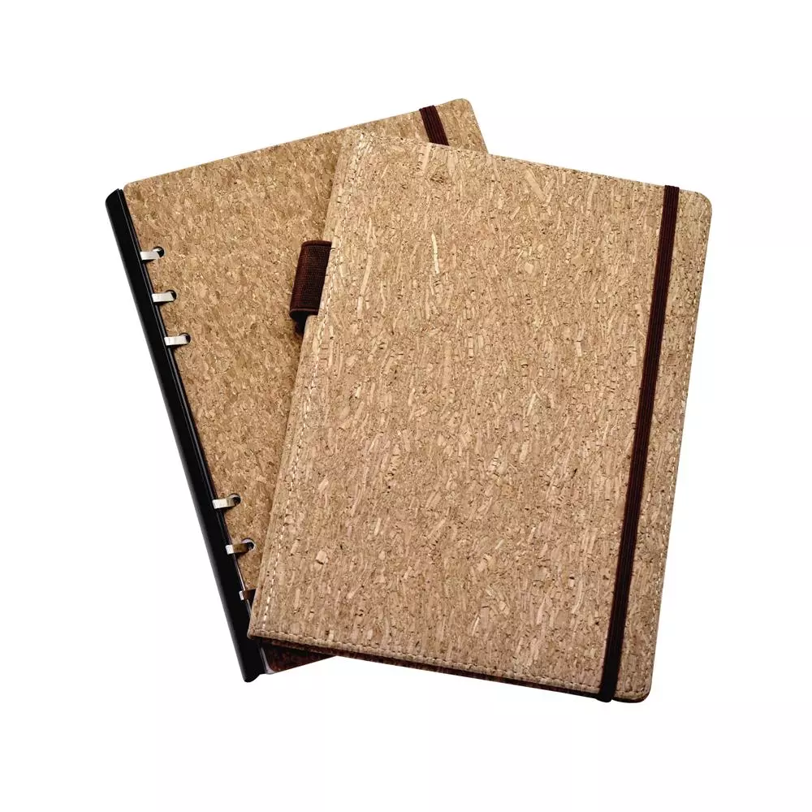

Notebook Daur Ulang
Notebook dari kertas daur ulang, cocok untuk catatan harian, ramah lingkungan dan ringan dibawa. Notebook kertas daur ulang ini dirancang khusus untuk kamu yang peduli lingkungan tanpa mengurangi kenyamanan saat menulis. Dibuat dari kertas hasil daur ulang berkualitas, setiap halaman tetap halus, tidak tembus tinta, dan nyaman digunakan untuk mencatat, menggambar, atau menulis ide kreatif. Dengan membeli notebook ini, kamu tidak hanya mendapatkan produk berkualitas, tetapi juga ikut berkontribusi menjaga bumi 🌎💚
Harga: Rp25.000
Checkout Sekarang